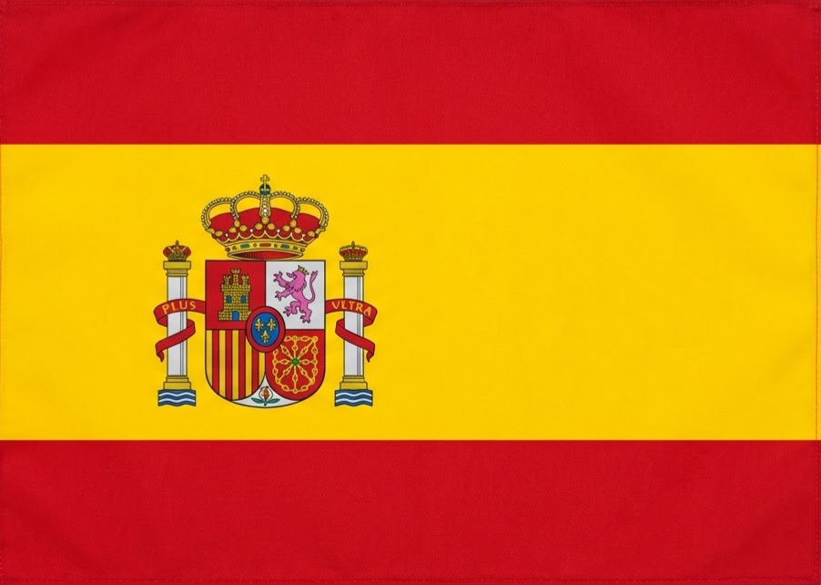

Spain (ოფიციალურად ესპანეთის სამეფო, Reino de España) — სახელმწიფო ევროპის
სამხრეთ-დასავლეთით, პირენეს ნახევარკუნძულზე. მოიცავს კანარის კუნძულებს ატლანტის ოკეანეში, ბალეარის
კუნძულებს მარტოხელა ზღვაში, ასევე ენკლავებს სეუტას და მელილიას აფრიკაში. დედაქალაქი და უდიდესი
ქალაქია მადრიდი; სხვა მნიშვნელოვანი ქალაქებია ბარსელონა, ვალენსია, სევილია და ბილბაო.
Spain Flag

ძირითადი მონაცემები:
მმართველობის ფორმა: საპარლამენტო კონსტიტუციური მონარქია; სახელმწიფოს მეთაური — მეფე
ფელიპე VI, მთავრობისმეთაური — პრემიერ-მინისტრი პედრო სანჩესი.
მოსახლეობა: ~49,8 მილიონი (2026); ფართობი: ~505 992 კმ², ევროკავშირში 4-ე ადგილი.
ოფიციალური ენა: ესპანური (კასტილიური); კატალანური, ბასკური და გალისიური ავტონომიური
რეგიონებში სო-ოფიციალურია; ვალუტა: ევრო.
ეკონომიკა: განვითარებული, ევროკავშირში 4-ე ადგილი ნომინალური მშპ-ით (~2,1 ტრლიონი $);
მსოფლიოს ერთ-ერთი უმსხვილესი ტურისტული მიმართულება.
უმაღლესი წერტილი: მთა ტეიდე (3 715 მ, ტენერიფე); დროის სარტყელი: UTC+1 / UTC+2.